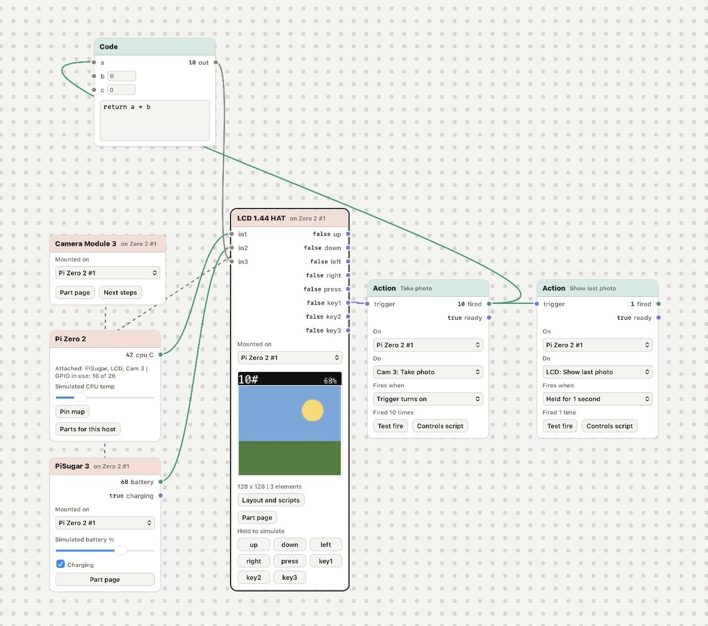

The sandbox
Offline node-graph sandbox for planning Raspberry Pi and ESP32 builds, with wiring checks and generated Python

Has releasesRaspberry PiESP32Wavesharenode graphPyodide
2 updates from Oct 2026 to Oct 2026
Mediums
Code spectrum
Hardware 0, System / network 0, Data / tools 8, Web / platform 10
Timeline
First version
Makers Sandbox is a single HTML file that runs in the browser with no install, server or network access. Hardware parts are dropped onto a blank canvas as nodes and wired together, and the sandbox generates the Python scripts for the build.
Makers Sandbox on GitHub Pages
The parts bin covers hosts (Pi Zero 2, Pi 5 and ESP32-S3) and add-ons such as e-ink and LCD HATs, PiSugar, cameras, sensors and buttons. Each part is checked for pin, ribbon-cable and I2C address conflicts. Mounting a breadboard wires sensors, buttons and small screens onto it automatically and produces a drawing, a wiring table, voltage checks and a shopping list. Power, I2C, SPI, UART, GPIO, PWM, ribbon, USB and HAT connections each have their own color, shape and label.
Wires carry typed values between sensors, logic, buttons, screens and actions. Screens can be laid out with text, shapes, icons and camera frames and previewed on the canvas, and actions map a button or sensor to things like taking a photo or shutting down. The sandbox generates setup, control and screen scripts, a main.py and an autostart service, plus a mock camera for testing on a computer without a Pi. One button exports the whole project as a PDF guide, from flashing the SD card to autostart.
The Run tab in the console simulates the unit: screens redraw on their refresh timing, keys and sensors can be operated by hand, and time can be sped up to 60x. Custom programs run in real Python through Pyodide, with stand-ins for the Waveshare, luma and LCD drivers. Projects are saved in the browser and can be exported and imported as JSON. The generated hardware code has not yet been verified on real hardware.